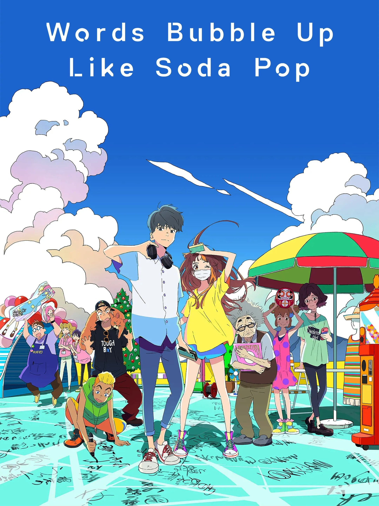

My Top 10 Favourite Movies
Top 2
 Howl's Moving Castle
When an unconfident young woman is cursed with an old body by a spiteful witch, her only chance of breaking the spell lies with a self-indulgent yet insecure young wizard and his companions in his legged, walking castle.
Howl's Moving Castle
When an unconfident young woman is cursed with an old body by a spiteful witch, her only chance of breaking the spell lies with a self-indulgent yet insecure young wizard and his companions in his legged, walking castle.
Top 3
 My Neighbhor Totoro
When two girls move to the country to be near their ailing mother, they have adventures with the wondrous forest spirits who live nearby.
My Neighbhor Totoro
When two girls move to the country to be near their ailing mother, they have adventures with the wondrous forest spirits who live nearby.
Top 4
 Spirited Away
During her family's move to the suburbs, a sullen 10-year-old girl wanders into a world ruled by gods, witches, and spirits, and where humans are changed into beasts.
Spirited Away
During her family's move to the suburbs, a sullen 10-year-old girl wanders into a world ruled by gods, witches, and spirits, and where humans are changed into beasts.
Top 5
 The Wind Rises
A lifelong love of flight inspires Japanese aviation engineer Jiro Horikoshi, whose storied career includes the creation of the A6M World War II fighter plane.
The Wind Rises
A lifelong love of flight inspires Japanese aviation engineer Jiro Horikoshi, whose storied career includes the creation of the A6M World War II fighter plane.
Top 6
 A Whisker Away
The line between human and animal starts to blur after a girl transforms herself into a cat.
A Whisker Away
The line between human and animal starts to blur after a girl transforms herself into a cat.
Top 7

Word Bubble Up Like A Soda Pop
After meeting one bright, sunny day, a shy boy who expresses himself through haiku and a bubbly but self-conscious girl share a brief, magical summer.
Top 8
 Belle
A high school student becomes a globally beloved singer after entering a fantastic virtual world. She soon embarks on an emotional and epic quest to uncover the identity of a mysterious beast who's on the run from ruthless vigilantes.
Belle
A high school student becomes a globally beloved singer after entering a fantastic virtual world. She soon embarks on an emotional and epic quest to uncover the identity of a mysterious beast who's on the run from ruthless vigilantes.
Top 9
 Weathering With You
Set during a period of exceptionally rainy weather, high-school boy Hodaka Morishima runs away from his troubled rural home to Tokyo and befriends an orphan girl who can manipulate the weather.
Weathering With You
Set during a period of exceptionally rainy weather, high-school boy Hodaka Morishima runs away from his troubled rural home to Tokyo and befriends an orphan girl who can manipulate the weather.
Top 10
 Ocean Waves
As he journeys back from Tokyo to his high school for a reunion, Taku Morisaki recounts his memories of his school days, focussing in particular on a love triangle that developed between him and two of his friends.
Ocean Waves
As he journeys back from Tokyo to his high school for a reunion, Taku Morisaki recounts his memories of his school days, focussing in particular on a love triangle that developed between him and two of his friends.